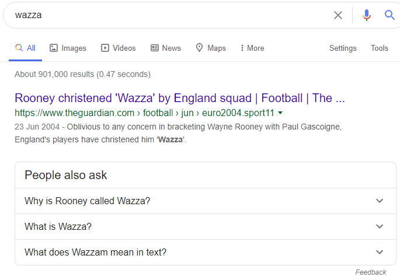

anyway I should stop this lol
What is a name of your YT channel again?
My original post does look scummy and forced, but I really don’t know how to solve that feeling in my gut.
you’re not getting it 
Oof memes denied
1 Like
kyo in randomizer at one point said when suspicion was on them
“Im MaStErMiNd”
or something like that you get the idea sometimes they mocking agree with accusers
1 Like
it’s… really not hard to find
but i won’t link it if wazz doesn’t want me to
you can search up “Wazza” and find it in a second
I think I found it Wazza
I am taking responsibility for my awful post. Lynch me if you like, but I won’t walk it down with a “lol reaction test” thing
honestly I don’t care, link it if you want.
I was 11 and 2 months when I started it lol
this is the first channel that shows up if you do
But we’re getting sidetracked.
1 Like

I just found this out.
Wazza is famous Pog
1 Like
https://www.youtube.com/watch?v=7nhjXsVtLAs
ok
i’ll post his 2011-tier spinny intro and then we can get back on track
…Okay maybe search up WazzaAzza
it doesn’t even flip backwards 0/10
ight so gorta, your sticking with your idea that theres a wolf in Wazza/Marshal
which one do you think is more likely?
WazzaAzza
AzzaWazza
Azza Wazza
Aaron W[REDACTED]